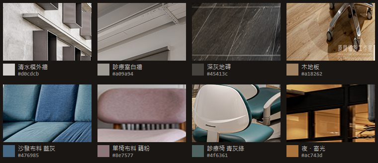

① 點綴＝沙發布料的藍灰 #81a2bb
取自候診沙發 #4e718b，色相 206 一度沒動，只提明度。是你在家具布料上實際選的那個調色，面積也最大；同時是全診所最接近夜空的顏色。

小時候被大人牽著來
現在牽著別人
從中華路到永樂街 四十多年
- 1983開業至今
- 9位醫師駐診
- 6個部定專科
治療項目
- 一般牙科・定期檢查
- 牙周治療
- 兒童牙科
- 齒顎矯正
- 植牙・假牙重建

- 底
- 面
- 線
- 字
- 地板
- 點綴
這一版的每一個數字，都取自你桌面 01-Preview 那 108 張診所照片：先逐張跑 k-means 抽主色，再對指定材質做局部裁切取樣（沙發布料、單椅布料、診療椅、木地板、地磚、清水模特寫、夜間窗光）。沒有一個顏色是目測調的。

上一版判斷「材質整體近中性、極低彩度、微暖」，方向對，但把色偏均勻地灑在整條灰階上。實測顯示不是這樣：
| 取樣位置 | 色 | 彩度 | R−B |
|---|---|---|---|
| 清水模外牆 特寫（白天） | #d6d4d3 | 3.5% | +3 |
| 清水模外牆 特寫（白天） | #c7c5c5 | 1.8% | +2 |
| 清水模外牆 特寫（白天） | #97999c | 2.5% | −5 |
| 診療室 白牆 | #a09a94 | 5.9% | +12 |
| 候診區 深灰地磚 | #45413c | 7.0% | +9 |
| 候診區 深灰地磚 | #36312b | 11.3% | +11 |
| 清水模 夜・受光面 | #83786d | 9.2% | +22 |
| 清水模 夜・暗部 | #1a110c | 36.8% | +14 |
白天的清水模幾乎是純中性（彩度 1.8～5.1%，比上一版估的 4～11% 更中性）。但夜裡完全不是——夜間受光的牆彩度 9.2%、暗部 36.8%。原因很單純：夜裡照到它的只剩診所自己的燈。
所以校正後的規則是「暗處最暖、往亮處收回中性」，不是整條均勻微暖：底與面彩度 8～11%（對應地磚與夜間暗部），次要文字彩度 6～7%、R−B +12（對應白牆），主文字彩度 5.1%、R−B 只有 +3（對應清水模亮部）。
上一版只有兩張診療室照片可用，抽到 #3c5f61 就當成家具布料的顏色。照片進來以後，這件事要改：
| 取樣位置 | 色 | 色相 | 彩度 | 身分 |
|---|---|---|---|---|
| 候診沙發 布料 | #4e718b | 206 | 28.1% | 家具 |
| 候診沙發 布料（另一張） | #38607b | 204 | 37.4% | 家具 |
| 長椅 布料 | #2d4455 | 206 | 30.8% | 家具 |
| 單椅 布料 | #8e7577 | 355 | 10.0% | 家具 |
| 單椅 布料（另一張） | #967e7c | 5 | 11.0% | 家具 |
| 磚紅長椅 布料 | #7c3721 | 15 | 58.0% | 家具 |
| 診療椅 | #4f6361 | 174 | 11.2% | 醫療設備 |
你說「在布料選擇上會選一些調色」，實際上那個調色是藍灰 H≈206——沙發、長椅都是它，面積也最大。單椅是藕粉 H≈356、彩度只有 10%，低到幾乎是灰。只有一張長椅是磚紅。
而診療椅的青灰綠 H=174 是醫療設備，不是你挑的家具布料。它彩度也只有 11.2%，比上一版拿到的 #3c5f61 更灰。
上一版說「木頭和燈光在這間診所裡本來就是同一件事」，當時只有兩個色可以佐證。這次四個獨立樣本都落在同一條色相軸上：木地板 H=30、另一間木地板 H=32、夜間窗光 H=30、入口燈 H=34。
另外，整棟建築唯一天然的冷色是夜空 #373b42（H=218）——而沙發布料的藍灰 H=206 是全診所最接近它的顏色。所以下面第 ① 案的點綴色，同時對得上「家具布料」和「夜空」。
三個版本的灰階完全一樣（底 #191614、面 #211e1b、字 #e3e1e0），差別只在點綴色是哪一種布料，而且只出現在三個地方：文章標籤、現在看診中的燈點、電話號碼。連數字（1983／9／6）都刻意不上色。三個點綴色色相一度都沒動，只把明度提到暗底上讀得動。
全站唯一用木頭的地方，仍然只有診所資訊帶上緣那條 3px 的線，色值換成實測的地板色 #a18262。它是一個水平面，不是裝飾線。
取自候診沙發 #4e718b，色相 206 一度沒動，只提明度。是你在家具布料上實際選的那個調色，面積也最大；同時是全診所最接近夜空的顏色。
小時候被大人牽著來
現在牽著別人
從中華路到永樂街 四十多年
治療項目
取自單椅 #8e7577，彩度只有 10%，是全診所最低調的一個彩色。放在灰階上幾乎不跳，但暖度和灰階同一邊——最像「稍微透出一點溫度」而不是「加了一個顏色」。
小時候被大人牽著來
現在牽著別人
從中華路到永樂街 四十多年
治療項目
上一版的方案，但色值校正過：實測是 #4f6361（彩度 11.2%），比上一版拿到的 #3c5f61 更灰。它是診間裡真正會被看見的顏色，只是來源是醫療設備而不是家具。
小時候被大人牽著來
現在牽著別人
從中華路到永樂街 四十多年
治療項目
三個底色 × 八個前景色共 24 組，全部通過 WCAG AA（內文 4.5:1）：
| 前景 | 底 #191614 | 面 #211e1b | 面+1 #2a2724 |
|---|---|---|---|
| 主文字 #e3e1e0 | 13.82:1 | 12.73:1 | 11.39:1 |
| 次要 #aaa49e | 7.30:1 | 6.72:1 | 6.02:1 |
| 更淡 #969089 | 5.70:1 | 5.25:1 | 4.70:1 |
| ① 藍灰 #81a2bb | 6.70:1 | 6.18:1 | 5.53:1 |
| ② 藕粉 #ae9395 | 6.35:1 | 5.85:1 | 5.24:1 |
| ③ 青灰綠 #8faeab | 7.55:1 | 6.96:1 | 6.23:1 |
| Logo 苔綠 #8ca07f | 6.39:1 | 5.88:1 | 5.27:1 |
最低 4.70:1。木色 #a18262 只用在那條 3px 的線上，不承載文字，所以不列入。
文章分類標籤、「現在看診中」的燈點、電話號碼。其餘全部是灰。暗色系最容易失敗的地方就是到處都在發光，所以發光的權力只給「現在有沒有開」和「怎麼找到人」這兩件事。數字（1983／9／6）刻意不上色。
選 ①（沙發布料藍灰）。它是你在家具上實際挑的那個調色、在診所裡的面積最大，而且是全棟唯一和夜空同一邊的顏色——在「暗夜診所」這個定調下，它同時說得通兩件事。②（藕粉）是最安靜的選擇，如果你覺得 ① 還是太顯眼就用它。③ 保留是為了讓你直接比對上一版。
桌機版排法；文章內頁與醫師介紹頁的暗色版；亮／暗自動切換。
照片為芳仁牙醫診所自有（取自 01-Preview）。這一頁完全不動正式首頁。